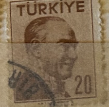
| SOURCE | TITLE| IMAGE MATCH | click to source page |
| HipStamp | Antonios Philatelics / HipStamp | 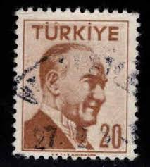 |
| HipStamp | Turkey 1957 Early Issue Fine Used 75K. 091597 | Europe - Turkey, Stamp / HipStamp | 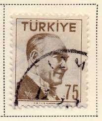 |
| 123RF | Mustafa Kemal Stock Photos and Images - 123RF | 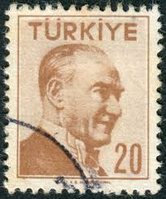 |
| Shutterstock | Turkey Circa 1956 Stamp Printed Turkey Stock Photo 121293970 | Shutterstock | 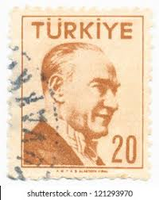 |
| eBay | Turkey Stamp, Scott 1242 MLH | eBay | 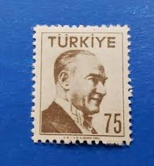 |
| Stampedia | TURKEY 1957 20 kurus Definitive Stamps, 1956series | Kemal Ataturk(Double Frame;Serifs) | 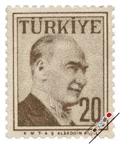 |
| Dreamstime.com | 3,607 Postcard Stamp Turkey Stock Photos - Free & Royalty-Free Stock Photos from Dreamstime |  |
| Stampedia | TURKEY 1957 25 kurus Definitive Stamps, 1956series | Kemal Ataturk(Double Frame;Serifs) |  |
| eBay | Turkey 1956 Sc# 1226-1227 Lot of 2 Mint Stamps MNH & MNG Kemal Ataturk | eBay | 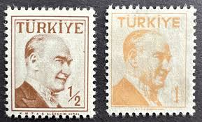 |
| Shutterstock | Photo & Image Portfolio by Yavuz ILDIZ | Shutterstock Contributor | 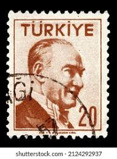 |
| kitantik | Mektup Zarfından Kesilmiş / Postadan Geçmiş Pul Filateli - Damgalı - ATATÜRK, 20 PARA - Türkiye Cumhuriyeti - Turkish Stamp - NOSTALJİK DOĞUM GÜNÜ HEDİYESİ - Efemera - kitantik | #16802412003653 | 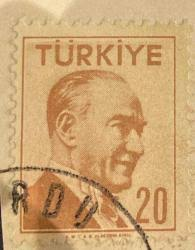 |
| Webstore.com | USED TURKEY #1274 (1957) | Stamps (Postage Stamps) | Buy & Sell at Webstore | 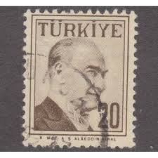 |
| HipStamp | Turkey #1283 Kemal Ataturk; Used | Europe - Turkey, General Issue Stamp / HipStamp |  |
| HipStamp | Turkey - #1233 Kemal Ataturk - Used | Europe - Turkey, General Issue Stamp / HipStamp | 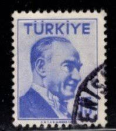 |
| Pngtree | 347+ Mustafa Kemal Ataturk Photos, Pictures And Background Images For Free Download - Pngtree | 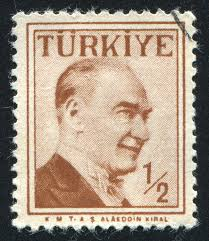 |
| HipStamp | Turkey - #1264 Kemal Ataturk - Used | Europe - Turkey, General Issue Stamp / HipStamp | 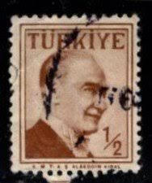 |
| HipStamp | Turkey - SC #1283 - Used - 1957 - Item Turkey009Ns13 | Europe - Turkey, General Issue Stamp / HipStamp | 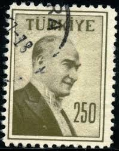 |
| stampsandstuff.net | Stamps from Turkey | 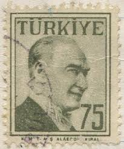 |
| Pngtree | Kemal Ataturk Testa Capelli Ataturk E Immagine Per Il Download Gratuito - Pngtree | 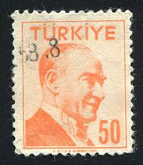 |
| lastdodo.com | Atatürk 2 (1958) - Türkiye - LastDodo | 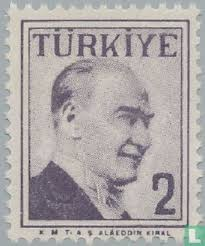 |
| Mercari | 68826] Turkey 1964-1965 Definitives Atatürk | Mercari | 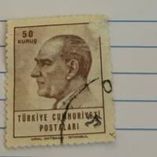 |
| Pngtree | Kemal Atatürk Başı Yaşlı Yüz Ve Ücretsiz İndirmek İçin Resim - Pngtree | 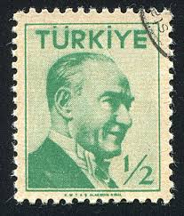 |
| HipStamp | Turkey 1957 Early Issue Fine Mint Hinged 1K. 091582 | Europe - Turkey, Stamp / HipStamp | 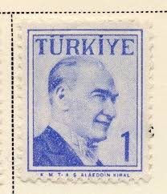 |
| Shutterstock | 16+ Thousand Old Turkish Man Royalty-Free Images, Stock Photos & Pictures | Shutterstock | 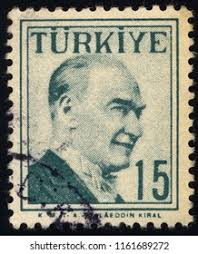 |
| Dreamstime.com | Kemal Ataturk editorial stock photo. Image of postage - 100264398 | 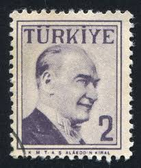 |
| Alamy | Mustafa Kemal Ataturk (1881-1938), first President of Turkey, postage stamp, Turkey, 1958 Stock Photo - Alamy | 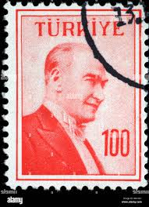 |
| Dreamstime | Postage Stamp Printed in Turkey Shows Kemal Ataturk 1881-1938, First President, Definitive Postage Stamps, Ataturk, Double Frame Editorial Photo - Image of 1958, kemal: 169007891 | 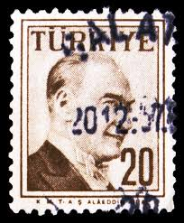 |
| Stampedia | stampedia TURKEY STAMP catalog | 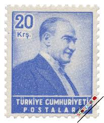 |
| eBay | Turkey Famous Country Leader Ataturk stamp 1969 MNH A-1 | eBay |  |
| Alamy | Republic postage hi-res stock photography and images - Page 2 - Alamy | 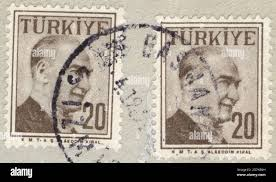 |
| Alamy | Aircraft drawing hi-res stock photography and images - Page 14 - Alamy | 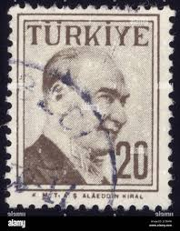 |
| Alamy | Postage stamp from Turkey in the Definitive Postage Stamps, 1958, Ataturk, Double Frame series issued in 1958 Stock Photo - Alamy | 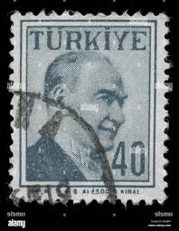 |
| Pngtree | يحيى كمال بياتلي تركيا شخص جاد والصورة للتنزيل المجاني - Pngtree | 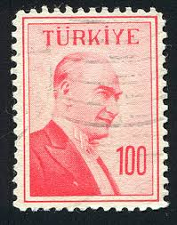 |
| Shutterstock | Turkey Circa 1920 Stamp Printed Turkey Stock Photo 120764071 | Shutterstock | 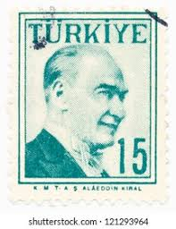 |
| HipStamp | TURKEY Scott 1728 Used stamp | Europe - Turkey, General Issue Stamp / HipStamp | 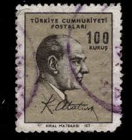 |
| 1963 “İSTANBUL63” PUL SERGİSİ DAMGASIZ ZAMKLI TAM SERİ ALDIM : 30 TL | 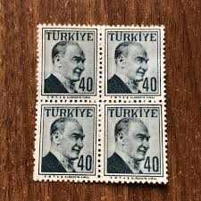 | |
| Todocolección | turquia - valor facial 25 kurus - año 1975 - mu - Buy Antique stamps of Turkey on todocoleccion | 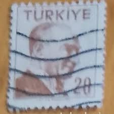 |
| Stampedia | TURKEY 1980 100 lira Definitive Stamps, 1981series | Kemal Ataturk | 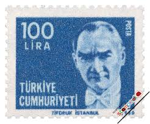 |
| Pngtree | Mustafa Kemal Atatürk PNG, Vector, PSD, and Clipart With Transparent Background for Free Download | Pngtree | 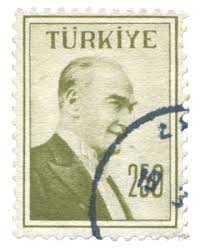 |
| eBay | Machine Cancel Turkish Stamps for sale | eBay | 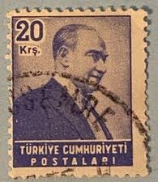 |
| eBay | Turkey - 1970 -1971 Ataturk | eBay | 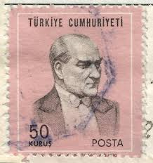 |
| Dreamstime | Postage Stamp Turkey 1965. Ataturk Portrait Editorial Image - Image of designer, history: 210209470 |  |
| Dreamstime.com | Turkey on postage stamps editorial stock photo. Image of exposition - 143064788 | 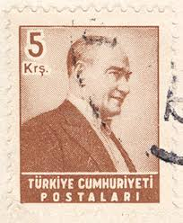 |
| DAMGASIZ ZAMKLI BLOK PUL ALDIM : 20 TL | 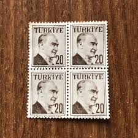 | |
| Alamy | TURKEY - CIRCA 1964: stamp printed by Turkey, shows Recaizade Mahmut Ekrem, Writer, circa 1964 Stock Photo - Alamy | 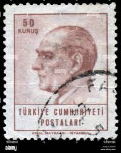 |
| Shutterstock | Turkey-circa1955a Stamp Printed Turkey Shows Image Stock Photo 90169546 | Shutterstock |  |
| lastdodo.com | Atatürk 20 (1984) - Türkiye - LastDodo | 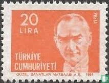 |
| Dreamstime.com | 156 Turkey 1980 Stock Photos - Free & Royalty-Free Stock Photos from Dreamstime | 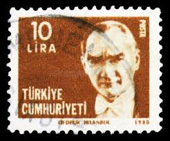 |
| DAMGASIZ GOMSUZ BLOK PUL ALDIM : 12 TL |  | |
| Alamy | TURKEY- CIRCA 1992: stamp printed by Turkey, shows Sait Faik Abasiyanik, writer, circa 1992 Stock Photo - Alamy | 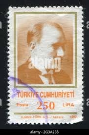 |
| HipStamp | Stamps Are Friends / HipStamp | 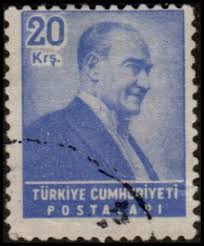 |
| Nadir pasaport harç pulu 70 TL | 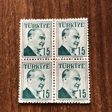 | |
| Dreamstime.com | Turkiye Cumhuriyeti Stock Photos - Free & Royalty-Free Stock Photos from Dreamstime | 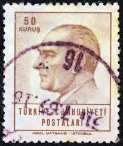 |
| eBay | Turkey 1970, Definitive Stamps: Atatürk set MNH, Mi 2168-72 incl 2170B cat €34,5 | eBay | 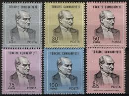 |
| Shutterstock | Ataturk Stamps: Over 867 Royalty-Free Licensable Stock Photos | Shutterstock | 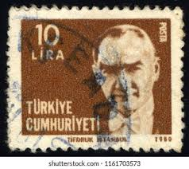 |
| Shutterstock | Stamp Price: Over 25,285 Royalty-Free Licensable Stock Photos | Shutterstock | 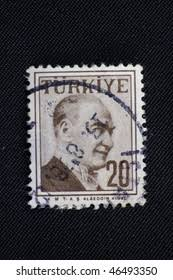 |
| eBay | Turkey, Scott 1879 ** 1966 in MH Condition | eBay | |
| Shutterstock | 7+ Hundred Old Person Turk Royalty-Free Images, Stock Photos & Pictures | Shutterstock | |
| Shutterstock | 2+ Thousand 1881 1938 Royalty-Free Images, Stock Photos & Pictures | Shutterstock | |
| eBay | Turkey - 1961 -1962 Ataturk | eBay |